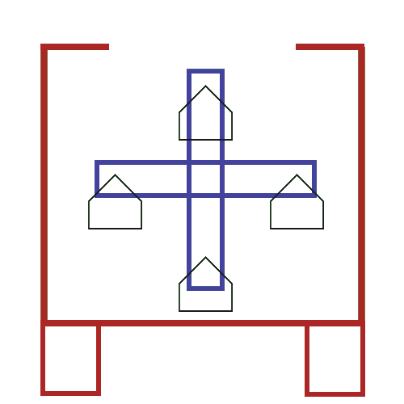
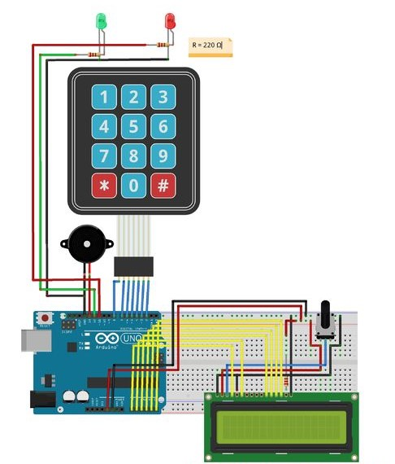

Armoire autonome

Ici est détaillé le projet de Terminale en Sciences de l'Ingénieur que je devais mener avec deux autres élèves. Le sujet était au choix et devait contenir une programmation, une partie construction de la structure, et une partie choix du moteur. Chacune de ces parties doit être menée à travers une simulation et une réalisation. Le sujet que nous avions choisi était une armoire automatique, dont l'utilisateur ppourra choisir le compartiment auquel il veut accéder.
ACTIONS REALISEES
Elaboration du système
La structure de l'armoire est modélisée via le schéma ci-dessous.
Les compartiments en question seront chacuns disponibles à l'aide d'un code, donné via un pavé numérique. Chaque compartiment serait alors relié à un code particulier. Lorsqu'un code est saisi et validé, s'il fait partie des codes existants, les compartiments tournent afin de mettre celui demandé à disposition de l'utilisateur. Si le code rentré n'existe pas, alors un écran LCD affichera une erreur.
Nous nous sommes répartis les tâches et il a été décidé que je m'occuperai de la programmation de l'armoire.
Simulation
J'ai fait le choix de simuler le système à l'aide du langage de programmation Python.
Le programme en question initialise quatre codes différents ainsi que les compartiments associés, numérotés de 1 à 4. Le code est ensuite demandé à l'utilisateur qui doit en donner un. Si le code n'existe pas, le programme renvoie une erreur. Dans le cas contraire, le numéro du compartiement est affiché ainsi que le nombre de quarts de tours en sens anti-horaire nécessaires afin de mettre celui-ci à disposition.
La position de chaque compartiment est stockée dans un fichier texte mis à jour à chauqe fin de programme et rouvert dès que celui-ci est lancé. La position des compartiments est modélisée par les numéros de ceux-ci (1 à 4) placés dans l'ordre de leur emplacement par rapport à l'ouverture de l'armoire, en sens horaire. Par exemple, 2 - 3 - 4 - 1 signifie que le compartiment actuellement à disposition est le second, et que ceux qui suivent en sens horaire sont le troisière, le quatrième, et le premier.
Le nombre de quarts de tours nécessaires pour mettre à disposition le bon compartiment est calculé via la position de celui-ci. Dans le cas où le compartiment demandé se trouve en dernière position, afin d'économiser de l'énergie et du temps, le programme affichera -1, signifiant que le système doit effectuer un quart de tour dans le sens inverse.
Réalisation
Le programme devait être adapté pour une carte Arduino. C'est la raison pour laquelle j'ai choisi d'utiliser le langage C. Avant d'écrire et de tester le code sur Arduino, j'ai préféré le rédiger pour un système virtuel sur le site Tinkercad.
Cependant, en raison de ma méconnaissance du langage à l'époque et au manque de matériel, je n'ai pas pu terminer le programme dans le temps imparti, bien que cela m'ait permis d'aiguiser mon esprit logique.
RESULTATS
Le projet n'a pas pu être finalisé dans les temps. Cela est dû principalement à la crise de la COVID-19 qui a grandement diminué nos moyens et nous a retardé dans la réalisation des tâches. Cette expérience nous a néanmoins permis de nous améliorer dans différents domaines. Pour ce qui est de la simulation en langage Python, il s'agissait du programme le plus ambitieux que j'avais à réaliser à l'époque. Pour cette partie, les résultats étaient concluants et cela m'a permis de me forger une base solide en termes de programmation.